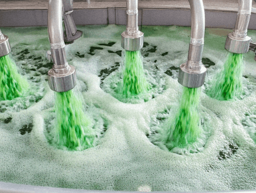

This home boasts state-of-the-art security measures that ensure the safety and well-being of you and your loved ones.
Tired of losing your keys to the house, leaving you locked out? Fear not, for this house can recognise those with access to the house, and requires a password from those who do not!
There is no need to fear robbers and criminals, as this house is located far away from any humans! In order for anyone to get to your house, they would have to slog their way through a nuclear wasteland, providing a great deterrance to thieves. In addition, if anyone does make it to the house, the home will detect any tresspassors and shutter the windows!
Never fear a fiery catastrophe with never seen before fire combatant systems! In addition to the cutting-edge fire detectors and ceiling sprinklers, there are water rats that can put out fires before they become problematic, as well as a whopping 20 hoses that dispense a potent anti-fire solution for the tougher flames.
